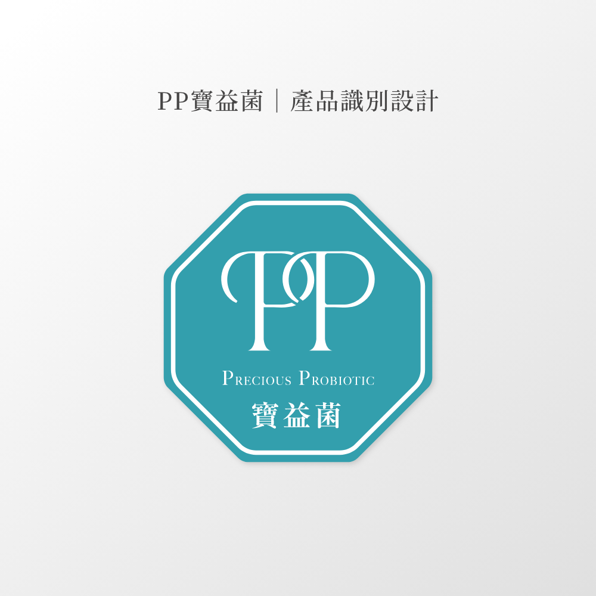
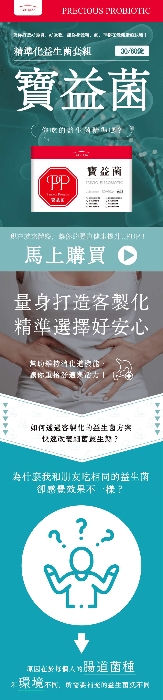
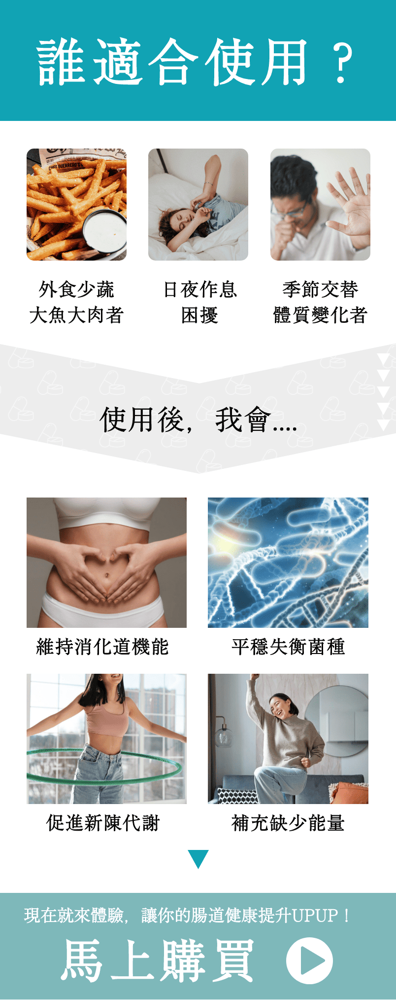
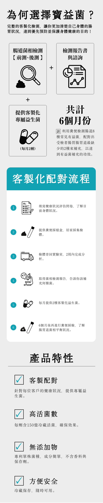
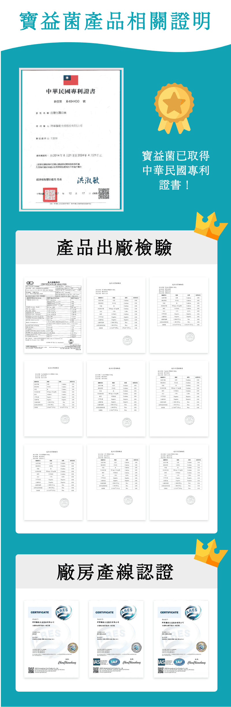
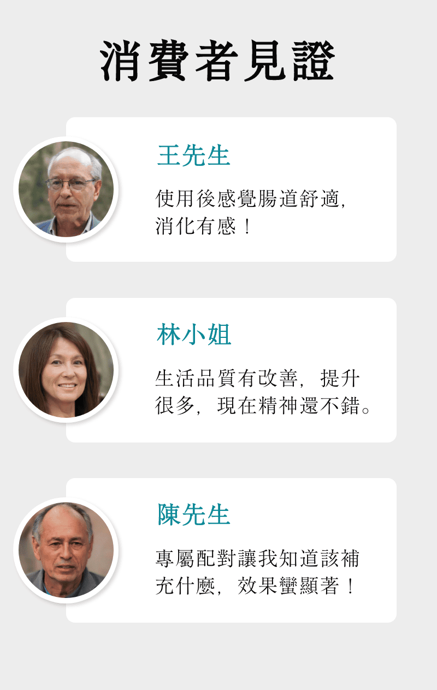
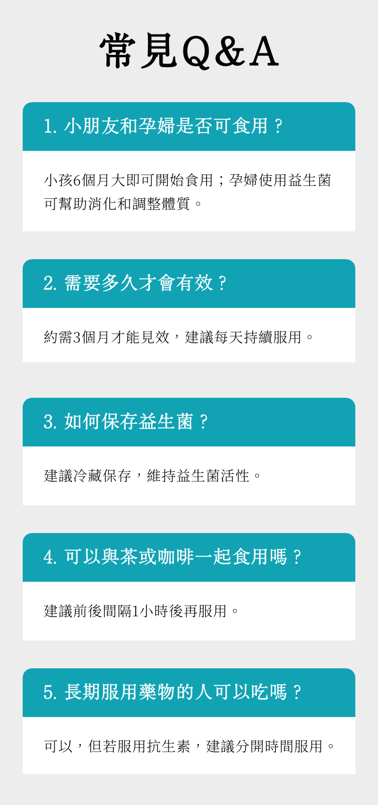

見證一個專案視覺的誕生｜從無到有，從LOGO延伸到所有產品視覺
LOGO設計
由於「PP寶益菌」的名字已經定好了，因此只能從Precious Probiotic的縮寫PP來進行發想。 PP寶益菌主要是一款高等級的糞便檢測專案，藉由檢測結果分析，能客製化客戶的腸胃道細菌菌種，來達到身體吸收良好的效果，所以在P的選字上，會使用襯線體，也是為了讓他高雅、尊貴一點。 PP看似鎖鏈的感覺，也是為了傳達「健康這件事，是一環扣著一環的」的概念。
包裝盒設計
寶血的【健康食品｜淨善滋護系列】中，寶益菌屬於「滋」系列，旨在滋養胃部好菌，因為我們相信健康的腸胃是擁有健康身體的基石。 值得注意的是，這款產品採用了非寶血品牌色系。這是因為寶益菌是我們獨立的【PP寶益菌糞便檢測專案】的專屬產品。為了讓客戶更容易辨識這個特別的專案系列，特別選用了湖水綠作為其代表色。
產品介紹DM設計
為了讓大家更了解維持腸道菌相平衡的重要性，除了產品介紹DM之外，也特別製作了詳細的八種菌種介紹。這樣一來，顧客就能清楚知道自己食用的健康食品中，到底含有哪些成分，進而更了解產品的功效。
菌種介紹DM設計
為了讓每種菌種都能以其獨特的樣貌呈現，花費了大量的時間上網查找資料，力求精準描繪。這些可愛的菌種圖案不僅有助於大眾理解，其活潑的設計也能吸引家長和兒童的關注。
簡報設計
在確立了產品色彩和大致樣貌後，簡報的設計環節變得相對輕鬆。真正的挑戰在於如何整合所有文案，並將其邏輯性地轉化為客戶能輕鬆理解的簡報內容。
著陸頁設計





